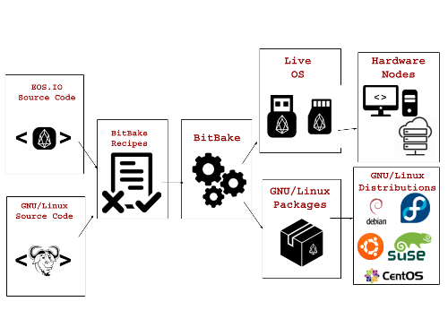

EosBake is an EOS.IO Infrastructure Plarform for Sidechain Deployment.
EosBake aims to be the bridge between the Yocto Project and EOS.IO communities. The OpenEmbedded Layer named meta-eosio enables flexible design of EOS.IO Nodes and Sidechains. For a detailed description, please read our Steemit articles.

EosBake is being implemented by Global Crypto Holdings.
Global Crypto Holdings Inc. is an InfoSec, Fintech and Consulting company focused on innovative Blockchain solutions for the financial service industry.